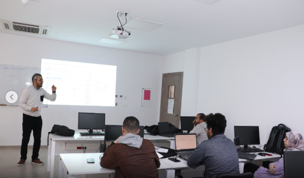

Formation Spring Boot
Date : 2024
Lieu : IIT
Formation intensive sur le framework Spring Boot pour le développement d'applications Java. Cette formation m'a permis d'acquérir des compétences solides en développement backend et de comprendre les bonnes pratiques de l'architecture MVC.
J'ai appris à créer des API REST, à gérer les bases de données avec JPA/Hibernate, et à implémenter la sécurité avec Spring Security. Cette formation a été déterminante pour mes projets académiques et professionnels.